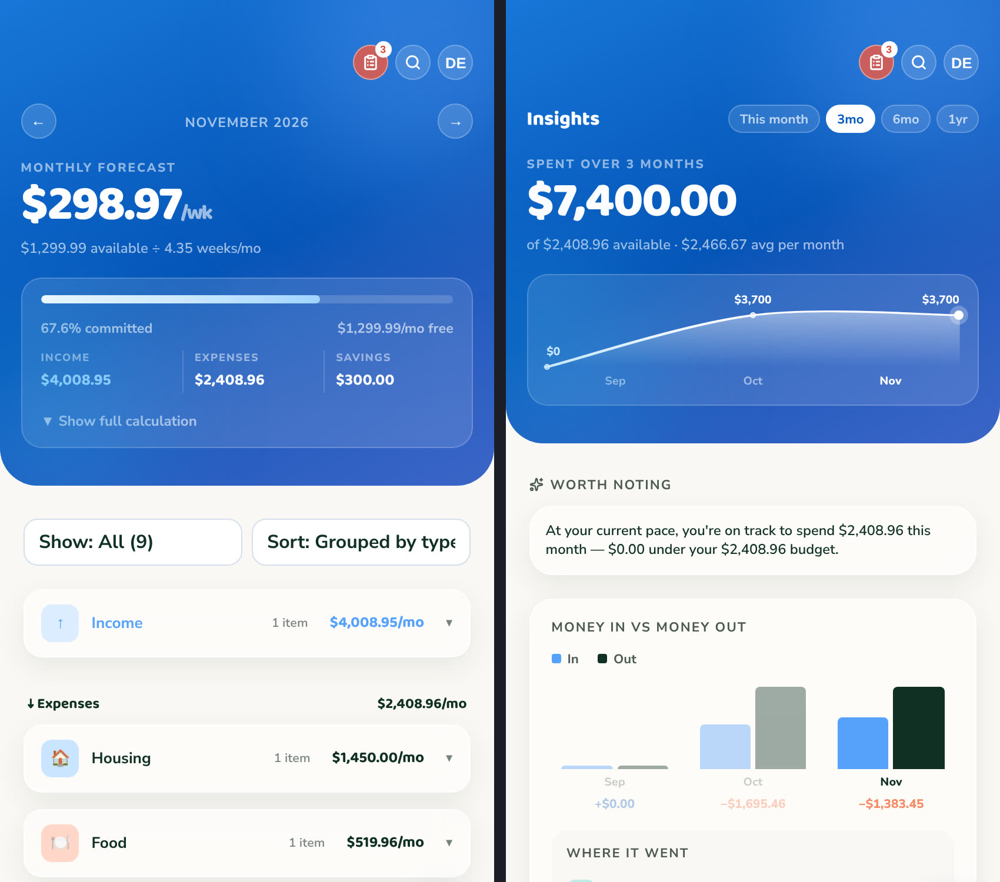

WeekSpend
Problem: I wanted a fast way to track spending by week without a subscription budgeting app or a spreadsheet I'd never open, and I wanted it to pull in real transactions instead of manual entry.
Approach: A React app on Cloudflare Pages, with a Pages Functions API and a Cloudflare D1 database, and Plaid to sync bank transactions so they can be categorized automatically against a weekly budget.
Workflow: Every change starts as a GitHub branch. Cloudflare Pages builds a preview ("multidev") deployment for each one, so I can review and test a change live before merging to the branch that powers production.
- What I directed
- The budget-item data model, the invite-only account system and JWT-based auth, the transaction-categorization rules, and the Cloudflare deployment (Pages, Pages Functions, D1).
- What AI handled
- Boilerplate React components, the first draft of the Plaid integration, and repetitive API route scaffolding, all of which I tested and reviewed.
Status: Live and in daily use, invite-only (no public sign-up).